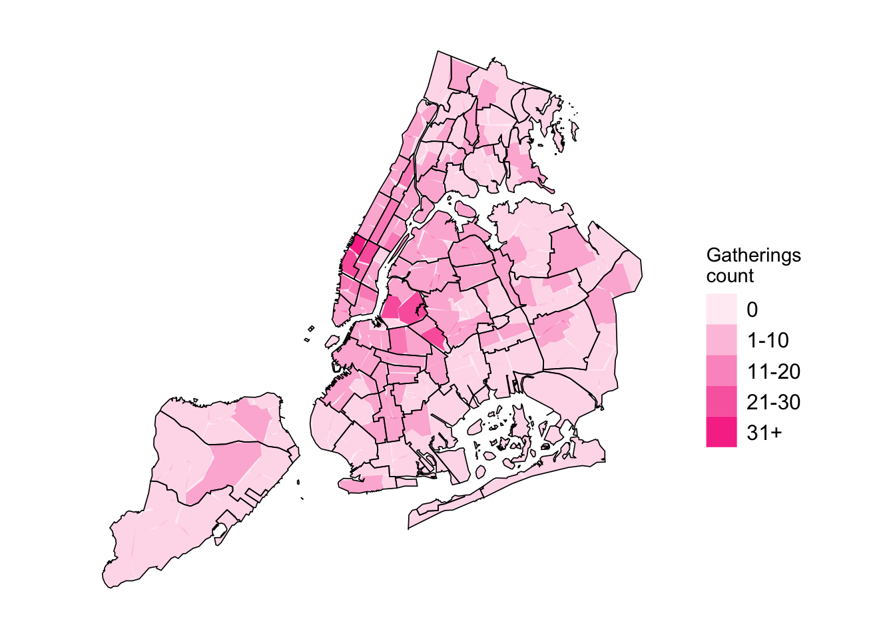

tabledata_gatherings<-targets::tar_read(tabledata_gatherings)scale_labels<-c("0", "1-10", "11-20", "21-30", "31+")mpxnyc::neighborhood_sf_obj|>sf::st_as_sf()|>dplyr::left_join(tabledata_gatherings, by ="neighborhood")|>dplyr::mutate(count =ifelse(is.na(count), 0, count))|>dplyr::mutate(count_cat =cut(count, c(-1,0,10,20,30,100), scale_labels))|>dplyr::arrange(-count)|>ggplot2::ggplot()+ggplot2::geom_sf(data =mpxnyc::community_sf_obj, fill ="white", linewidth =0, color =NA)+ggplot2::geom_sf(data =mpxnyc::community_sf_obj, fill ="#F73C95", linewidth =0, color =NA, alpha =0.1)+ggplot2::geom_sf(ggplot2::aes(alpha =count_cat), linewidth =0, fill ="#F73C95", color ="#FF99C5")+ggplot2::geom_sf(data =mpxnyc::community_sf_obj, fill =NA, linewidth =0.3, color ="black")+ggplot2::scale_alpha_discrete("Gatherings\ncount")+theme_mpxnyc_blank( plot.background =ggplot2::element_rect(fill ="white"), legend.position ="right")

Figure 7.1: Popular neighborhoods for gatherings, MPX NYC, 2022
MPX NYC participants reported 604 total locations where they had physical or sexual contact in a group setting—what we call gatherings. Two in five gatherings occurred in private residences, and about a quarter took place at dance parties. Over half of gatherings were in Manhattan, while roughly one-third occurred in Brooklyn.
Physical or sexual contact in group setting in past 4 weeks
p-value2
Did not have sex
N = 2641
Had sex
N = 3521
Overall
N = 6161
Place type
<.001
Concert/Theatre/Show
63 (24%)
4 (1.1%)
67 (11%)
Dance Party
110 (42%)
33 (9.4%)
143 (23%)
Dark Room/Sex Party
10 (3.8%)
52 (15%)
62 (10%)
Private Residence
28 (11%)
222 (63%)
250 (41%)
Something Else
40 (15%)
40 (11%)
80 (13%)
Sport Game
13 (4.9%)
1 (0.3%)
14 (2.3%)
Place borough
0.3
Bronx
6 (2.3%)
18 (5.1%)
24 (3.9%)
Brooklyn
84 (32%)
96 (27%)
180 (29%)
Manhattan
144 (55%)
188 (53%)
332 (54%)
Queens
29 (11%)
48 (14%)
77 (13%)
Staten Island
1 (0.4%)
2 (0.6%)
3 (0.5%)
Distance from home
<.001
Same Community District
42 (16%)
144 (41%)
186 (30%)
Same Borough
116 (44%)
114 (32%)
230 (37%)
Different Borough
106 (40%)
94 (27%)
200 (32%)
1n (%)
2Pearson’s Chi-squared test; Fisher’s exact test
Data source: MPX NYC 2022
7.1 Sexual contact and distance from home
Just less then one in three of all gatherings happened within the same community district as the participant’s home, one-third were in another borough, and the remainder were in a different community district within the same borough.
Figure 7.2: MPX NYC contact venue type by distance from home and sexual contact
Gatherings that involved sexual contact were overwhelmingly private residences, whereas non-sexual physical gatherings were mostly dance parties (Figure G.1).
The closer a venue was to a participant’s home, the more likely it was to be a private residence and to include sexual contact. Conversely, the farther the venue, the more likely it was a dance party.
7.2 Popular neighborhoods
The neighborhoods most frequently mentioned as gathering locations included Hell’s Kitchen and Chelsea in Manhattan, and East Williamsburg, Bushwick, and Bedford-Stuyvesant in Brooklyn.
Code
table_data<-make_tabledata_gatherings()|>dplyr::filter(count>16)|>dplyr::ungroup()|>dplyr::select(neighborhood, community, borough, count, proportion)labelled::var_label(table_data$neighborhood)<-"Neighborhood"labelled::var_label(table_data$community)<-"Community district"labelled::var_label(table_data$borough)<-"Borough"labelled::var_label(table_data$count)<-"Count of gatherings"labelled::var_label(table_data$proportion)<-"Proportion of gatherings"table_data|>gt::gt()|>gt::tab_header( title ="Most popular neighborhoods for gatherings", subtitle ="MPX NYC 2022")|>gt::fmt_percent(proportion, decimals =0)